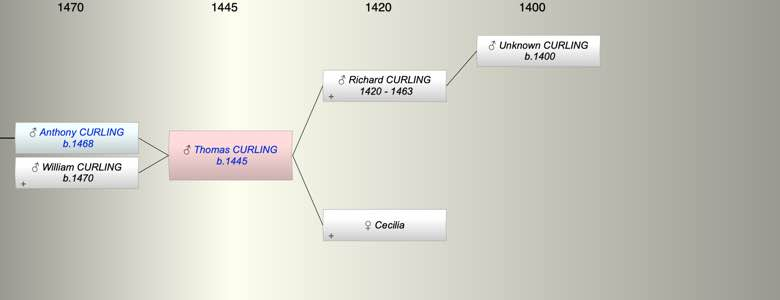

| [Index] |
| Thomas CURLING (1445 - ) |
|  |
| b. abt 1445 |
| Parents: |
| Richard CURLING (1420 - 1463) |
| Cecilia |
| Siblings (3): |
| Robert CURLING (1447 - 1500) |
| Johanna CURLING (1450 - ) |
| William CURLING (1452 - ) |
| Children (2): |
| Anthony CURLING (1468 - ) |
| William CURLING (1470 - ) |
| Grandchildren (4): |
| Robert CURLING (1490 - 1542), Anthony CURLING (1495 - 1564), John CURLING (1495 - 1573), Nicholas CURLING (1498 - 1567) |
| Events in Thomas CURLING (1445 - )'s life | |||||
| Date | Age | Event | Place | Notes | Src |
| abt 1445 | Thomas CURLING was born | ||||
| abt 1463 | 18 | Death of father Richard CURLING (aged 43) | |||
| abt 1468 | 23 | Birth of son Anthony CURLING | |||
| abt 1470 | 25 | Birth of son William CURLING | |||
| Created on a Mac™ using iFamily for Mac™ on 8 Oct 2023 |